CodeGrid で、Canvas への文字描画で Web フォントを適用する方法について書いた。
このシリーズでは、Google Fonts の静的サブセッティング下での適用方法を扱ったけど、動的サブセッティング下での解説は予定してないのでこちらに書いておく。
Web フォントの基本的な仕組み
まず、Canvas 云々は置いといて、以下が Web フォントの基本的な仕組み（ほぼ CodeGrid に書いた内容）
フォントリストへの FontFace オブジェクトの追加
- 要素に Web フォントを適用するには以下前提がある
- フォントソースとフォント名を紐付けた
FontFaceオブジェクトが、フォントリスト（document.fonts）内にある FontFaceの持つフォントソースからフォントデータが読み込まれている必要がある
- フォントソースとフォント名を紐付けた
FontFaceを追加する方法は 2 つある- CSS で
@font-faceルールを書く@font-faceの定義と同等の設定を持つFontFaceオブジェクトが自動的に生成され、フォントリストに追加される- 追加されるのを待つには、
document.fonts.ready（Promise）を参照する（但し、これが有効なのは初期描画時点のみ）
- JS で
FontFaceオブジェクトを生成しフォントリストに追加するdocument.fonts.add(new FontFace(....))
- CSS で
動的サブセッティングの FontFace オブジェクトの追加方法
- 基本的には、「Web フォントが適用された要素を見つけたタイミング」で、その文字を含むフォントデータを得るためのフォントソースを API から得て「フォントリストに追加」する
- （静的サブセッテイングの場合は、すべてのサブセットを最初からフォントリストに読み込む）
- 「 Web フォントが適用された要素を見つける」のは、
- Web フォントサービスが提供する独自実装された JS で、サービスを利用するにはこの JS の読み込みが必要
- （静的サブセッテイングの場合は、ブラウザが勝手にやる）
- 「フォントリストに追加」する方法は、上記 JS の実装により異なる
- JS だったり（
document.fonts.add） - CSS にまかせたり（
<style>@font-face{...}</style>を<head>に append） - （静的サブセッテイングの場合は、ブラウザが勝手にやる）
- JS だったり（
フォントデータの読み込み要求
- ブラウザは次の条件でフォントデータの読み込みを試みる（試みはするけど実際に読み込まれるとは限らない）
- フォントリスト内のフォントが適用された要素を検出した時
- 動的サブセッティング提供の JS がフォントリストの追加をするのは、要素へのフォント適用を検出した時なので、結果としてブラウザによる読み込み要求の対象となる
- ちなみに Canvas への Web フォント描画も検出対象になる、Web フォントで描画されないけど....（詳しくは CodeGrid）
- フォントリスト内のフォントが適用された要素を検出した時
document.fonts.laod(...)、fontFace.load()が実行された時- 動的サブセッティングのサービスによっては、この
load()メソッドで読み込み要求する実装もある
- 動的サブセッティングのサービスによっては、この
フォントデータの読み込み条件
- ブラウザによるフォント適用の検出があった時、または、
document.fonts.laod(...)が実行された時、以下条件に一致するFontFaceをフォントリスト内から見つけると、そのFontFaceのフォントソースからフォントデータを読み込む（fontFace.load()の場合は以下 1 つ目の条件のみが適用される）FontFace.statusがunloadedであること- 対象フォントと
FontFace.familyが一致していること - 対象「文字列」内のいずれかの文字が
FontFace.unicodeRange内にあること- 静的サブセッティングではサブセット内に存在するフォントデータの範囲を、この
unicodeRangeに設定する
- 静的サブセッティングではサブセット内に存在するフォントデータの範囲を、この
TypeSquare 下での Web フォントの利用
動的サブセッティング下で Canvas 描画するには、フォントの検出＆読み込みをする独自 JS が、どのようにして Web フォントを適用しているかを知ることが大事。なので、Canvas でない要素に Web フォントを適用した時の挙動を調べる。
独自 JS の読み込み
<script type="text/javascript"
src="//typesquare.com/3/tsad/script/ja/typesquare.js?5cedf0....&auto_load_font=true"
charset="utf-8">
auto_load_font=trueクエリの指定で、動的な Web フォントの適用も検出対象となる。
@font-face -> FontFace の追加
初期レンダリングの時点で、Web フォントがどの要素にも割り当てられてなければ、@font-faceの定義も、フォントリスト内のFontFaceも存在しない状態になる。
初期レンダリングの時点の割り当てや、動的な割り当てを検出すると、その都度@font-faceの定義を含む<style>が<head>内に append され、この定義を反映したFontFaceがフォントリストにも追加される。以下は、aという 1 文字にSuzumushiというフォントを割り当てた時に、append された@font-faceとFontFace。
@font-face
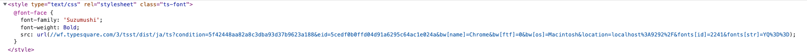
FontFace
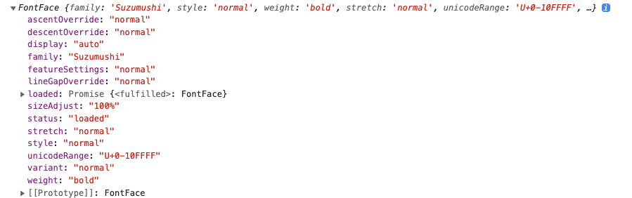
statusがloadedになっているのは append により、フォントの検出と取得が生じ、unloaded -> loading -> loadedという遷移をしたため。また、uncode-rangeデスクプリタが指定されていないため、unicodeRangeは全文字範囲（U+0-10FFFF）が指定された状態になる。
必要になった文字は、fonts[str]=YQ%3D%3Dというクエリで指定される。YQ%3D%3Dは文字列の値であり、この場合aに相当する。検出文字列がabcであればYWJjという値が指定される（どういう変換なのかはよくわからない）
フォントデータの重複読み込みの抑止
静的サブセッティング下では、利用可能性のある全てのサブセットを、unicodeRangeによる@font-faceで指定されている前提があるため、重複読み込みを抑止する機能が自動的に働く。
しかし、動的サブセッティングの場合、必要となったフォントデータのフォントソースの参照を、動的にフォントリスト内に追加する構成なので、上記のような自動的な抑止機能は働かない。提供された JS 内で抑止処置がされてなければ、重複読み込みは発生してしまう。
検出文字列が以前の検出結果とぴったり一致してる場合
TypeSquare 場合は、検出文字列が以前の検出結果とぴったり一致してる場合のみ、重複読み込みが抑止される。
たとえば、aという文字に Web フォント指定し、3 回非同期で表示した場合、
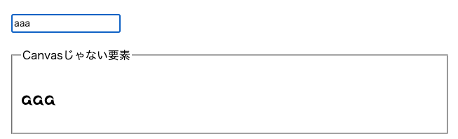
aに相当するYQ%3D%3Dという値がクエリで指定されたフォントソース（src）の定義を含む@font-faceが、3 つ append される。
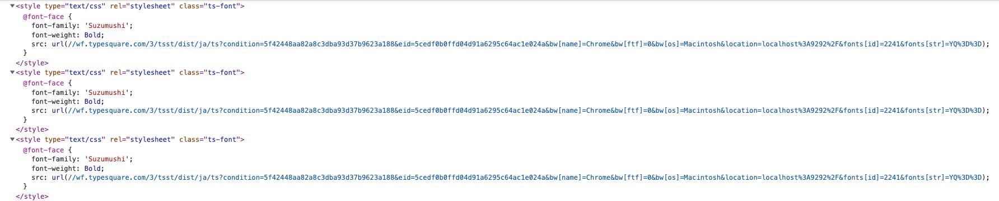
<style>タグをまたいだ同じ定義内容である上記の 3 つ@font-faceは、定義内容が同じなため 1 つのFontFaceオブジェクトとしてまとめられ、フォントリスト内に追加される（ブラウザがそういう挙動を示す）。
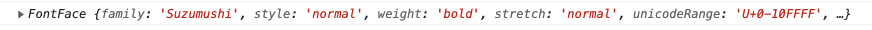
しかし、仮に、次のように同一<style>タグ内に同じ定義の@font-faceが 3 つ存在した場合は、
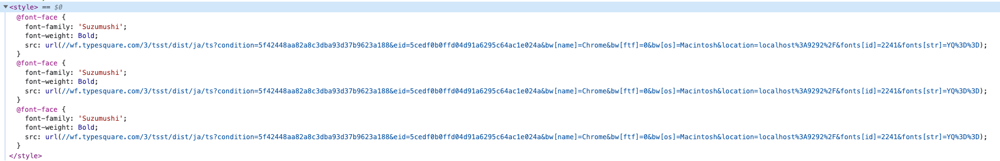
FontFaceオブジェクトも 3 つ生成される。
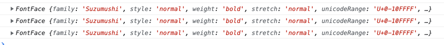
ので、JS で重複読み込みを抑止しているというより、ブラウザの気が効いていて、結果として抑止されているという感じ。
既にフォントデータを取得した文字が検出結果に含まれていた場合
たとえば、abという文字のフォントは取得済みな状態で、新たな検出結果がabcという文字列だった場合、必要なフォントデータはcのみだけどabcを含むフォントデータが返される。
ので、取得済みかどうかは関係なく、fonts[str]に指定する文字数が増える程、読み込みデータ量も増える結果となる。
TypeSquare 下での Canvas への Web フォントの適用
Canvas に Web フォントを適用するには、描画文字に対応するフォントデータが、読み込み済みの状態になっている必要がある。そのため、静的サブセティング下では、FontFaceSet#loadを使い、事前に生成されたフォントリストの定義内容をもとにフォントデータの読み込みを行う。
一方、動的サブセッティング下の場合、初期段階では、フォントリスト自体が空の状態のため、以下の一連の処理が必要になる。
- フォントを適用したい任意の文字列を指定することで、そのフォントデータが得られるフォントソースを返す、Web フォントサービスが提供する API の実行
- 1 で得たフォントソースを指定した
FontFaceオブジェクトの生成とフォントリストへの追加 - フォントデータの読み込み実行と、読み込み待ち
- Web フォントを適用した文字列の Canvas への描画
フォントデータの読み込み待ち問題
TypeSquare では、1 を行うためのwindow.Ts.loadFontAsync(FontObj)という API が用意されている。
window.Tsは、//typesquare.com/3/tsad/script/ja/typesquare.js?....を読み込むことで追加される。
ドキュメントサイトに掲載されている利用例をみると、次のような実装になっている。
<!DOCTYPE html>
<html>
<head>
<meta http-equiv="Content-Type" content="text/html; charset=UTF-8" />
<script
type="text/javascript"
src="//typesquare.com/3/tsst/script/ja/typesquare.js?5a2e354934b04540b59d7612ac1e029f&onload=false"
charset="utf-8"
></script>
<style type="text/css" rel="stylesheet">
body {
font-family: "Folk Bold";
margin: 15px;
}
.t1 {
font-size: 34px;
line-height: 1.5;
}
</style>
<script type="text/javascript">
const fontasync = function () {
const callbackId = Date.now();
Ts.loadFontAsync({
cssName: "Folk Bold",
text: document.getElementById("target").innerText,
hasHint: false,
outputType: "json",
callbackId: callbackId,
callback: callbackJson,
});
};
const callbackJson = function (params) {
const styleElement = document.createElement("style");
styleElement.setAttribute("type", "text/css");
styleElement.setAttribute("rel", "stylesheet");
const data = JSON.parse(params.data);
const data_object = JSON.parse(data.res);
styleElement.innerHTML =
"@font-face {font-family: '" +
data_object["fontFamily"] +
"'; font-weight: " +
data_object["font-weight"] +
";src: url(data:font/woff;base64," +
data_object["src"] +
");}";
document.head.appendChild(styleElement);
};
</script>
</head>
<body>
<div>
<input
class="btn"
type="button"
onclick="fontasync();"
value="API Method の フォント取得機能を利用してフォントをロード"
/>
<input
class="btn"
type="button"
onclick="document.location.reload();"
value="このサンプルを再読み込みする"
/>
<p id="target" class="t1">
TypeSquareはあなたのウェブサイトデザインを一新します。
</p>
</div>
</body>
</html>
サービスが提供する JS と同じように、動的に@font-faceの定義を含む<style>を<head>内に append していることが分かる。
また、
- ";src: url(data:font/woff;base64," ," + data_object['src'] +");}";
という記述から分かるように、この API を利用した場合は、base64 形式でフォントデータが返される。
この処置により、前述手順の 1, 2 を行ったことになる。Canvas でなければ必要な処理は以上で済む。しかし、Canvas の場合は、3 の「フォントデータの読み込み実行と、読み込み待ち」が必要であり、上記のように実装してしまうと、ややこしくなる。
まず、「フォントデータの読み込み実行」には、@font-faceの設定がフォントリストに反映されるのをまつ必要があるが、これにはFontFaceSet.readyは使えない。FontFaceSet.readyは、初期レンダリングの際のみにしか使えないので。
なので、この状態で無理にでも 3 の処理を行うには、auto_load_font=trueでサービスが提供する JS を読み込んでおき、適当な要素で Web フォントを適用した文字列を追加することで、提供 JS にその検出とフォントデータの読み込みを実行させ、document.fontのloadingdoneイベントを listen して、読み込み完了を待つ必要ある。
// フォントの読み込みを行わせるためのダミーテキスト
const $dummyText = document.createElement('div');
$dummyText.innerHTML = text;
$dummyText.style.fontFamily = res.fontFamily;
const loadingDoneHandle = () => {
document.fonts.removeEventListener('loadingdone', loadingDoneHandle);
$dummyArea.removeChild($dummyText);
...
};
document.fonts.addEventListener('loadingdone', loadingDoneHandle);
// laoding -> loadingdoneを発火させるためのappend
$dummyArea.appendChild($dummyText);
テキストフィールドでユーザが指定した文字列をinputイベントで拾って、リアルタイムに Web フォントで描画するような、連続実行が想定されるケースでは、JS と CSS で処理が分断される上記のような実装だと、一連のリクエストをひと括りでまとめ処理するのが厄介になる。
フォントリストの追加とフォントデータの読み込みを JS で処理する
Canvas 描画のように、フォント読み込み後に JS でなにかしらの処理をしたい場合は、フォントリストの追加も、フォントデータの読み込みも、全部 JS でやってしまったほうが良い。
次のように、new FontFace(...)とFontFaceSet#addを使えばそれが可能であり、スムーズに Canvas の描画処理につなげることができる。
window.Ts.loadFontAsync({
cssName: fontFamily,
text,
hasHint: false,
outputType: "json",
callbackId: Date.now(),
callback: async (params) => {
const data = JSON.parse(params.data);
const res = JSON.parse(data.res);
const fontFace = new FontFace(
res.fontFamily,
`url(data:font/woff;base64,${res.src})`,
{
fontWeight: res["font-weight"],
}
);
document.fonts.add(fontFace); // フォントリストの追加
await fontFace.load(); // フォントデータの読み込み
// Canvas描画処理
},
});
フォントデータの重複読み込みの抑止
フォントデータの重複読み込みを抑止するには、単純に、API に投げた文字を記録しておき、その文字をクエリから除去して API を実行するようにすればよい。
const loadedStrings = [];
const trimLoadedString = (text) => {
return text
.split("")
.filter((str) => loadedStrings.includes(str) === false)
.join("");
};
const addToLoadedStrings = (text) => {
loadedStrings.push(...text.split(""));
};
const loadFont = async (fontFamily, text) => {
if (text === "") {
return;
}
return new Promise((resolve) => {
const targetStrings = trimLoadedString(text); // 読み込み済み文字の除去
if (targetStrings === "") {
resolve();
return;
}
window.Ts.loadFontAsync({
cssName: fontFamily,
text: targetStrings,
hasHint: false,
outputType: "json",
callbackId: Date.now(),
callback: async (params) => {
const data = JSON.parse(params.data);
const res = JSON.parse(data.res);
const fontFace = new FontFace(
res.fontFamily,
`url(data:font/woff;base64,${res.src})`,
{
fontWeight: res["font-weight"],
}
);
document.fonts.add(fontFace);
await fontFace.load();
addToLoadedStrings(targetStrings); // 読み込み済み文字の記録
resolve();
},
});
});
};
$textInput.addEventListener("input", function (event) {
loadFont("Suzumushi", this.value).then(() => {
// Canvasの描画
});
});
（上記の実装だと、unloaded or loaded の 2 つの状態管理しかしてないので、loading 中にリクエストがくると重複読み込みしてしまう。ので、静的サブセッティングのように laoding 状態のリクエストには、その Promise の解決を待つといった工夫をしたほうがより良い）
Adobe Fonts 下での Web フォントの利用
Adobe Fonts の場合、フォントデータの読み込みを動的 or 静的で選べるが、日本語フォントの場合は動的しか選べない。
独自 JS の読み込み
サイト上で、次のようなコードをコピペするよう指示される。これによってフォント検出＆取得をする独自 JS が読み込まれる。
(function (d) {
var config = {
kitId: ".....",
scriptTimeout: 3000,
async: true,
},
h = d.documentElement,
t = setTimeout(function () {
h.className = h.className.replace(/\bwf-loading\b/g, "") + " wf-inactive";
}, config.scriptTimeout),
tk = d.createElement("script"),
f = false,
s = d.getElementsByTagName("script")[0],
a;
h.className += " wf-loading";
tk.src = "https://use.typekit.net/" + config.kitId + ".js";
tk.async = true;
tk.onload = tk.onreadystatechange = function () {
a = this.readyState;
if (f || (a && a != "complete" && a != "loaded")) return;
f = true;
clearTimeout(t);
try {
Typekit.load(config);
} catch (e) {}
};
s.parentNode.insertBefore(tk, s);
})(document);
英数字の事前読み込みと unicodeRange の設定
上記処置により、利用頻度の高い英数字は、そのサブセットをフォントリストに追加された状態になる。
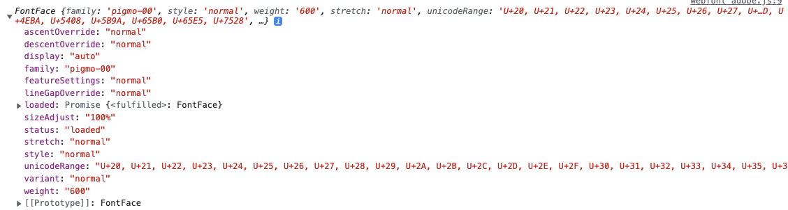
statusがloadedになっており、フォントデータの読み込みも済んだ状態になっている。また、unicodeRangeには、フォントデータとして保持している個別の文字が設定されている。
独自 JS は、これらの状態から読み込み状態を判断できるようで、例えば、Web フォントを適用した英数字を append しても、フォントデータの読み込みは行われずに、Web フォントが適用される。
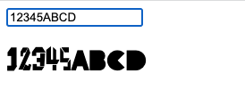
フォントデータの重複読み込みの抑止
逆に、英数字以外の文字の場合は、新たなフォントデータが読み込まれる。
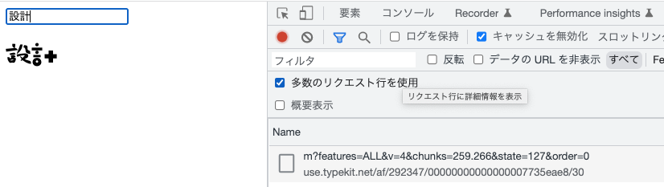
フォントリストにも、それに対応するFontFaceが追加される。
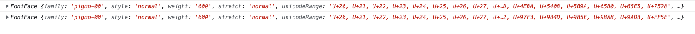
（追加されたFonfFaceのunicodeRangeを見ると、英数字が含まれているので、もしかしたら、毎回英数字を含んだフォントデータを返してるのかもしれないけど、基本的には）この処置によって必要になったフォントデータを取得しているのが分かる。
さらに、一度利用した文字で、再度を Web フォントを適用し描画した場合、フォントデータは読み込まれず、不要な重複読み込みが抑止されているのが分かる。
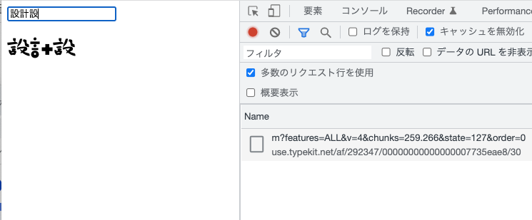
Adobe Fonts 下での Canvas への Web フォントの適用
Adobe Fonts の場合は、フォントデータを取得するための API が公開されていない。ので、フォントデータの事前読み込みをするには、以下のいずれかの方法を選択する必要がある。
- 独自 JS が呼んでいる API の仕様を解析して、自身の JS から直接呼ぶ
- Web フォントを当てた適当な要素を append して、独自 JS にフォントデータを読み込ませる
前者の場合、仕様が変わったらアウトだし、API のリクエストパラメータを見る限り、とても解析する気にはなれない。
URL: https://use.typekit.net/af/292347/00000000000000007735eae8/30/m?features=ALL&v=4&chunks=259.266&state=127&order=0
一方、後者の場合、フォントデータの読み込み完了タイミングを得る必要があるが、TypeSquare のように、document.fontsのloadingdoneイベントを使うことはできない。独自 JS ではFontFace#loadによる読み込みをしているようで、loadingdoneイベントが発火しない模様。
また、英数字のように初期段階で読み込まれてるフォント、あるいは、動的に読み込んだフォントを再度使う場合は、そもそも新たにフォントデータを読み込む必要がないため、その判定も必要になる。
苦肉の策
ので、それでもなんとか使うには、以下のような苦肉の策が必要になる。
- 読み込み済み判定
- フォントリスト内の
FontFace.unicodeRangeを走査し、描画文字列がその範囲に含まれているか照合する - 文字列を構成する文字すべてが、いずれかの
FontFace.unicodeRangeに含まれていれば、フォントデータの読み込みを行わない - 含まれていなかった文字については、フォントデータの読み込み対象とする（読み込んだ結果、新たな
FontFace.unicodeRangeがフォントリストに追加される）
- フォントリスト内の
- フォントデータ読み込み完了タイミングの判定
- ダミー要素を append して、
document.fonts.sizeが増えるのを監視するしかなさそう....
- ダミー要素を append して、
FontFaceSet#check は？
読み込み済み判定については、unicodeRangeも設定されてるし、document.fonts.checkという便利そうなメソッドを使いたくなるが、このケースでは使えない。
document.fonts.check(フォント名, テキスト); // true or false
これは、フォントリスト内のFontFace.unicodeRangeに、指摘したテキストが含まれていて、且つ、読み込み済みかを判定してくれるもの。なのだが、厳密には以下のように処理される。
FontFace.unicodeRangeに一致したデータを見つけた場合status = loaded->truestatus = unloaded->falsestatus = laoding-> ?（調べてない）
FontFace.unicodeRangeに一致したデータが無かった場合true<------ これが...
なので、静的サブセッティングのように利用可能性のあるサブセットが全てフォントリスト内にないと、意味をなさない。
読み込み済み判定
読み込み済み判定は、unicodeRangeと照合するため、テキストを unicode に変換する必要がある。これはString#codePointAtで得られる。
文字列と Unicode · JavaScript Primer #jsprimer
const convertCodePoints = (str) => {
return Array.from(str).map((char) => {
const codePoint = char.codePointAt(0).toString(16);
return `u+${codePoint}`.toUpperCase();
});
};
あとは、テキストを上記関数で 1 文字づつ unicode 化して、unicodeRangeと照合すればよい。
const unicodeRangeMatch = (fontName, text) => {
const codePoints = convertCodePoints(text);
return codePoints.every((codePoint) => {
let loaded = false;
document.fonts.forEach((fontFace) => {
if (
fontFace.family === fontName &&
fontFace.status === "loaded" &&
fontFace.unicodeRange.split(", ").includes(codePoint)
) {
loaded = true;
}
});
return loaded;
});
};
フォントデータ読み込み完了タイミングの判定
雑だけど、以下のような感じで実装できる。
const fontLoading = (fontName, text) => {
const $dummyText = document.createElement("div");
$dummyText.innerHTML = text;
$dummyText.style.fontFamily = fontName;
$dummyText.style.display = "none"; // 非表示でも検出対象になる！
document.body.appendChild($dummyText);
return new Promise((resolve) => {
const lastFontsSize = document.fonts.size;
const watchLoading = () => {
setTimeout(() => {
if (document.fonts.size > lastFontsSize) {
$dummyText.remove();
let loaded = true;
document.fonts.forEach((fontFace) => {
if (fontFace.family === fontName && fontFace.status !== "loaded") {
loaded = false;
}
});
if (loaded) {
resolve();
return;
}
watchLoading();
}
}, 100);
};
watchLoading();
});
};
検出は、独自 JS がやってるので、静的サブセッティング化で行われるブラウザによる検出と異なり、いろいろと厳密でないところがある。例えば、$dummyText.style.display = 'none'とかしても検出の対象になる。
読み込み制御の実装
上記２つの関数を使い、次のように読み込み制御をすれば、Adobe Fonts 下でも Canvas に Web フォントを適用できる。
const loadFont = async (fontName, text) => {
// 読み込み済みならなにもしない
if (unicodeRangeMatch(fontName, text)) {
return;
}
// フォントデータを読み込んだら解決するPromiseを返す
return fontLoading(fontName, text);
};
$textInput.addEventListener("input", function (event) {
loadFont("pigmo-00", this.value).then(() => {
// Canvas描画
});
});
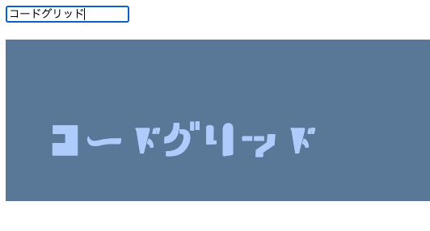